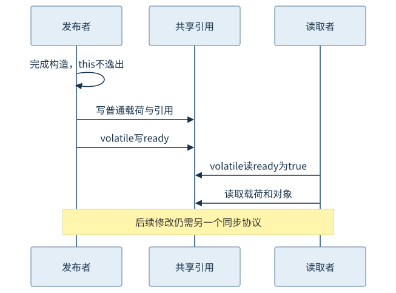

第六篇 · 内存模型、同步与线程
第25章 Java 内存模型
先写入、再等待，并不足以解释发布。为每一次共享读取找出同步边，才能说明它有权看到什么。
本章基于 Java 开发工具包（Java Development Kit，JDK）25.0.5.0.2 与 OpenJDK HotSpot；Java 虚拟机（Java Virtual Machine，JVM）的实现结论固定到提交 1775ea114f64。规范、实现与本轮观察分别解释。源码阅读、运行说明与证据索引相互对应。
25.1 内存模型与内存区域
25.1.1 先问允许读到什么
发布者先写入普通字段payload，再把ready设为true。读取者看到ready后能否使用payload？Java内存模型（Java Memory Model，JMM）回答的是共享动作之间有哪些约束、一次读取可观察哪些写入，以及整个执行是否满足规则。它不是处理器缓存协议的别名，也不要求实现真的维护一份“主内存副本”和每线程一份“工作内存副本”。
把单线程表达式的结果保持不变，并不总足以保证并发语义正确：另一个线程可能观察到中间动作。规范用程序顺序、同步动作、读写对应关系及因果要求约束允许执行。优化器、处理器与运行时可以采取不同策略，只要产生的行为仍在允许集合内。S1
25.1.2 存储位置不能代替同步关系
第9章的堆、栈和本地内存描述存储与资源所有权。实例字段、静态字段和数组元素是内存模型讨论的共享变量；局部变量与方法参数本身不在线程间共享，但局部引用指向的对象仍可共享。对象位于堆中，不意味着任意线程会立即、按源码顺序观察到它的全部修改。
垃圾收集屏障维护对象移动或标记一致性；语言内存屏障维护应用动作的顺序约束。两者可能在同一字段访问路径相遇，却承担不同契约。把第20章的写屏障当作安全发布，或把堆中对象误认为“自动同步”，都会漏掉真正需要证明的边。
25.2 原子性、可见性与顺序性
25.2.1 把一个操作拆成动作
普通int读或写可以是原子的，但count++包含读、加、写。两个线程都读到0再各写1，就丢失一次更新；即使字段改为volatile，每次读写各自有保证，整个读改写仍未成为一个不可分割操作。检查余额再扣减、先判断缺失再放入也有同类问题，必须按业务不变量确定原子区间。
可见性问某个写能否被读看到；顺序性问实现能否使其他动作表现为不同先后。它们不能简单互相替代。规范还允许非volatile的long与double按两半处理，不能从本机64位处理器恰好实现原子读写推出可移植保证；volatile long／double有规定的原子读写。
25.2.2 数据竞争有精确定义
同一变量的两个冲突访问中至少一个是写，且二者没有happens-before顺序，就构成数据竞争。正确同步的程序享有顺序一致性保证：可按保留各线程程序顺序的某个全局交错理解。这个保证不等于每个业务复合操作都自动原子，也不等于程序无死锁或公平。
无锁算法可以用原子变量、比较并交换和明确的发布规则协调共享状态；“没有synchronized”不是没有同步。反过来，普通共享访问即使跑过许多次都得到预期值，仍可能缺少规范保证。本章只运行正确发布的教学过程，不以压力枚举结果来证明允许集合。
25.3 happens-before推理
25.3.1 先画边，再做传递
happens-before是偏序关系。推理时先命名动作，再标出同一线程的程序顺序，补充规范规定的跨线程同步边，最后取传递闭包。本章的W(payload=42)先于volatile写V(ready=true)；读取者的volatile读R观察到该发布值后再读payload。W→V、V→R、R→D共同使W happens-before D。
成立条件也必须写入证明：同一个ready变量；读取者确实读取了对应发布；发布前构造已经结束；没有后续未同步改写payload。若还有并发写者，必须继续判断可被观察的写，不能仅凭“有一条边”跳过其他冲突。

25.3.2 同步顺序不是挂钟顺序
同步顺序是所有同步动作上的总序，须与每线程程序顺序一致；happens-before并不因此变成所有普通动作的总序。前者组织同步动作，后者提供可见性推理所需的偏序，二者都不是给日志时间戳排序。
线程A“看起来先执行了”、线程B晚启动读取循环、等待一秒、处理器缓存一致，都不能凭空补出缺失的跨线程边。日志本身又可能经同一输出锁同步，调试时增加输出可能改变交错。应把日志作为观察辅助手段，以规范动作关系作理由。
25.4 关键语言机制
25.4.1 volatile、锁、start与join各补哪条边
同一volatile变量的写同步于其后的读；同一监视器的解锁同步于后续加锁。锁还提供互斥，所以本章count++在同一个monitor下完成。只有读取也遵守同一协议，才有相应保证；拿另一个锁不能保护这份状态。
线程start之前的动作可以通过启动关系传递到新线程；终止被join等机制确认后，线程中的动作可传递到等待者。因此主线程在两个join之后读count可以看到更新；它不靠sleep碰运气。Thread.sleep与yield本身没有为普通数据提供同步语义。
payload = 42;
message = new Message(7);
ready = true;
以上片段来自PublicationJourney的发布者。读取者以ready为条件，parkNanos只用于减少忙等。等待有上限；超时表示本次没有取得发布条件，不读取未发布对象。

25.4.2 final初始化保证与安全发布
正确构造且构造期间没有this逸出的对象，其final字段有专门的初始化语义。经final引用到达的对象或数组，其构造结束时的有关状态也有特定可见性规则；这不能扩展成对未来任意修改的保证。final引用不能重新指向另一个对象，不代表目标集合或数组不可变。
构造器注册回调、把this放入共享容器、从构造器启动能访问自身的线程，都可能让外界过早看到对象。final不能自动修复这种逸出。本例Message是记录类，value为隐式final，但引用仍经volatile协议发布；这里两套规则并存，不把输出归功于单独一种机制。安全发布后仍有可变状态时，应继续使用锁、原子变量或不可变设计。
25.5 从语义到实现
25.5.1 编译依赖也是约束的一部分
源码中的volatile不会被直接替换为“刷新全部缓存”。HotSpot编译器为相关访问保留必要的内存依赖与屏障节点，限制不合法的移动或合并；匹配阶段再选择目标架构指令。第17章讨论的优化只在保持这些语义的条件下成立，屏障节点也可能被合并或由带顺序的访问指令吸收。
固定源码orderAccess.hpp定义运行时的获取、释放与各类排序职责；Java编译路径还要沿parse3.cpp、GraphKit和平台匹配规则追踪。运行时C++的OrderAccess不是所有Java volatile访问都必然调用的函数。本轮保留javap输出说明字段与同步体的字节码入口，没有把它说成机器指令。S2—S4
25.5.2 两种架构可以实现同一个契约
固定x86-64匹配规则中，部分获取／释放屏障编码为空，StoreLoad类约束由另外的屏障规则及条件处理；空编码仍有编译器约束意义。AArch64可以用ldar／stlr等带顺序的访问指令吸收相关屏障，也有dmb及消除条件。不能把某个匹配规则孤立理解为每次访问必然出现同一条指令。
本章跨架构证据是同一提交下的选择规则，并非两台机器的执行对照；本轮没有新增反汇编运行。x86-64较强的硬件顺序不能授权Java程序省略同步；AArch64的一次正确输出也不能证明无竞争。要解释具体汇编，还须固定编译层级、选项、内联和屏障消除上下文。

观察与边界
CH25-E01本轮输出payload=42、final=7、count=2、ready=true；程序正常完成。源码、类文件与javap记录见本章运行目录。这个结果是规则允许的一次执行；正确性理由来自25.3的动作推导，不来自成功运行次数。
没有运行错误发布、并发压力或性能比较。主平台为macOS AArch64；平台规则比较来自固定源码，没有声称x86-64实测。
回顾与思考
从共享变量找冲突，从同步机制补边，再核对后续写入与复合操作的原子范围。存储区域解释不了这些关系，真实时间也不能补边。
- 若把ready改成普通字段，推导图具体少了哪条边？
- 若ready仍为volatile但Message改为持有数组且数组稍后被修改，原证明能覆盖哪些动作？
- 为何count++需要锁，而主线程在join之后读count不再需要额外锁？
第26章把语言中的线程身份接到HotSpot与操作系统，并进一步辨认等待和调度。
来源
- Java语言规范25第17章：17.4.1、17.4.4—17.4.5、17.5、17.7
- OrderAccess：运行时获取与释放排序职责
- 优化编译器字段访问：Parse::do_get_xxx与do_put_xxx
- 平台匹配规则：与同提交x86/x86_64.ad的MemBar规则对照
精确路径、符号、条件和本轮记录见来源索引；源码阅读页是教学源码，不冒充HotSpot实现。